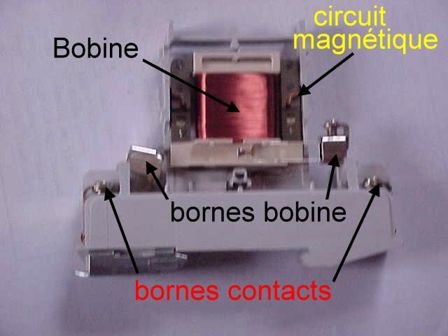
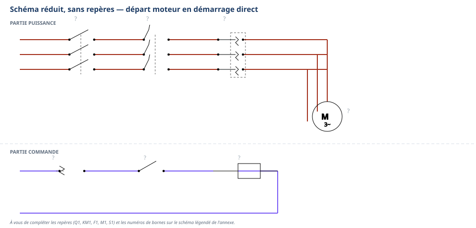

Thème / DomaineBrasage fort HP et électricité industrielle
Module atelier S5-E1 · 4 h × 2 passagesContacteurs et moteurs
SéquenceS5 · semaines 14-15
Nom________________
Prénom________________
Date (passage 1 / passage 2)_______ / _______
Positionnement01234
Mise en situation professionnelle
Ordre d'intervention n° OI-S5-3 : un commerce alimentaire de proximité prépare l'installation d'une
chambre froide dans son arrière-boutique. Le professeur, responsable du chantier, vous confie le
câblage du départ moteur du groupe qui entraînera le compresseur de cette future installation.
Aujourd'hui, une question guide tout le module : comment un contacteur fait-il démarrer et s'arrêter un
moteur, en toute sécurité ?
Tâches
T10 Repérer, raccorder, assembler les réseaux fluidiques, aérauliques et électriques T11 Contrôler les circuits hors fonctionnement T12 Respecter les consignes de sécurité et protéger la zone de travail
Savoirs
S5.6 Réseaux, matériels électriques et de régulation augmenté
Savoir-être
Sécurité électrique sans rappel · vigilance pièces tournantes · rigueur du câblage · honnêteté du contrôle
Compétences (≤ 4)
Confortement → vers MaîtriseC3.6 Câbler, repérer, connecter les liaisons électriques et électroniques ConfortementC3.7 Contrôler la mise en œuvre des équipements électriques et fluidiques
Ce qui change depuis S4 — En S4-Électricité, vous avez découvert le
contacteur, le relais thermique et le moteur sur des documents de cours : constitution, symboles,
fonctionnement expliqué sur le papier. Aujourd'hui, l'appareil est dans vos mains, ouvert, avant même
qu'on vous en reparle : vous allez observer, nommer, comprendre par vous-même. Le chantier change aussi
d'échelle : après le tableau électrique domestique du pavillon (S3), vous entrez dans l'armoire électrique
industrielle, avec son premier moteur à démarrer. É2 est passée : vos 2 objectifs de progrès
s'appliquent ici. Si vous étiez positionné(e) 1 ou 2 sur C3.6 au poste ÉLEC d'É2, la phase de vérification
des prérequis d'aujourd'hui vous reprend en priorité — n'hésitez pas à le signaler au professeur.
Passage 1 / Passage 2 — ce qui change
Passage 1 (semaine 14) — investigation matérielle + câbler la partie puissance seule : vous tenez un
contacteur ouvert en main, vous observez le relais thermique, vous découvrez la plaque signalétique d'un
moteur, puis vous câblez la chaîne de puissance (sectionneur, contacteur, relais thermique, moteur) — le
professeur alimente brièvement la commande pour un essai de rotation. Passage 2 (semaine 15) — câbler la commande complète, en autonomie guidée : vous ajoutez cette fois la
partie commande (interrupteur marche/arrêt, contact du relais thermique, bobine du contacteur), vous réalisez
vous-même le contrôle hors tension complet (continuité et serrage des connexions), et vous réalisez
l'essai au bouton test du relais thermique, sur votre propre montage.
Objectifs — je serai capable de…
nommer, sur un contacteur tenu ouvert en main, la bobine (A1-A2), les contacts de
puissance, les contacts auxiliaires et le ressort de rappel ;
nommer le rôle du relais thermique et repérer ses réglages en façade (intensité, bouton
test, stop/reset) ;
câbler la partie puissance d'un départ moteur (sectionneur → contacteur → relais thermique →
moteur), avec un contrôle hors tension avant tout appel au professeur ;
câbler la partie commande complète (interrupteur marche/arrêt + contact du relais thermique +
bobine du contacteur) et réaliser seul(e) le contrôle hors tension (continuité + serrage des
connexions) ;
réaliser un essai au bouton test du relais thermique, en respectant strictement le seul geste
autorisé — jamais provoquer un vrai défaut.
Prérequis — je sais déjà…
Ce module s'appuie sur des gestes déjà vécus en S1→S4 : je sais déjà réaliser
seul(e) une consignation et une vérification d'absence de tension (VAT) avant toute intervention ; je sais
câbler un télérupteur et une minuterie sur platine domestique (S3-E2, S4-E1) ; je sais identifier un
disjoncteur et un DDR sur une façade réelle (S3-E1) ; je connais la relation entre pression et
température constatée sur machine (S4-F1). Je connais aussi mon positionnement au poste ÉLEC de
l'évaluation É2 (C3.6, C3.9) : si j'étais à 1 ou 2, je le signale au professeur avant de commencer — une
reprise ciblée m'est proposée pendant l'exercice au fil de l'eau (module S5-T0).
Matériel
Un contacteur ouvert (démonté), un par groupe, pour l'investigation matérielle
Un relais thermique en main, un par groupe, façade visible
Un moteur avec plaque signalétique visible, pour observation (à faire valider par le professeur : tension,
intensité, couplage réels du matériel de l'atelier)
Platine élève équipée d'un rail oméga (× 1 par poste)
Interrupteur simple (S1), pour la partie commande (passage 2 uniquement)
Moteur du poste école (M1), avec plaque signalétique — couplage selon notice, à faire valider
Bornier de phase, bornier de neutre, bornier de terre (× 1 chacun)
Vis à bois pour la fixation du matériel (consommable)
Fils électriques souples, section du poste école (à faire valider par le professeur), couleurs
normalisées : noir/marron/violet (phases puissance), rouge (phase commande), bleu (neutre), vert/jaune
(terre) (consommable)
Tournevis plat et tournevis cruciforme, pince à dénuder, pince coupante
Multimètre numérique + jeu de cordons de mesure (rouge + noir)
Sécurité électrique — un rituel acquis, deux dangers nouveaux
Vous connaissez déjà la consignation et la vérification d'absence de tension (VAT)
depuis S1 : vous les appliquez seul(e), sans rappel. Deux dangers nouveaux apparaissent avec l'armoire
industrielle et le moteur : on ne provoque jamais un vrai défaut thermique pour « voir si ça marche » —
le relais thermique se teste uniquement avec son bouton test ; et un moteur en rotation a des pièces
qui tournent — mains, cheveux et vêtements doivent en rester à distance.
Risque
Parade
Choc électrique par contact direct avec une pièce sous tension
Ne jamais toucher un fil ou une platine sans avoir vérifié l'absence de tension (VAT). Travailler toujours hors tension pour tout câblage.
Pièces tournantes du moteur (mains, cheveux, vêtements happés)
Ne jamais s'approcher de l'arbre du moteur en rotation. Cheveux attachés, manches ajustées, pas de vêtements amples près du poste moteur.
Déclenchement non maîtrisé si un défaut réel est provoqué « pour tester »
Jamais de court-circuit ni de surcharge volontaire. Le seul essai autorisé est le bouton test du relais thermique.
Borne mal serrée qui s'échauffe (risque d'incendie)
Vérifier chaque borne à la main avant tout appel au professeur — c'est une partie du contrôle hors tension (C3.7).
Remise sous tension accidentelle pendant le câblage ou le contrôle
Sectionneur du poste maintenu ouvert pendant tout le câblage. Seul le professeur ferme le circuit, après contrôle systématique.
La consignation — rituel NF C 18-510, appliqué sans rappel
1. Couper — ouvrir le sectionneur (Q1) du poste.
2. Vérifier l'absence de tension (VAT) — contrôler au multimètre, position voltmètre.
3. Condamner / signaler — le professeur garde la main sur la mise sous tension.
4. Travailler hors tension — je câble, je mesure la continuité, toujours sectionneur ouvert.
Gestes interdits
Jamais toucher un fil ou une platine sans avoir vérifié l'absence de tension ;
Jamais provoquer un vrai défaut thermique (surcharge volontaire) pour tester le relais —
seul le bouton test est autorisé ;
Jamais s'approcher du moteur en rotation, même pour « juste regarder de près » ;
Jamais shunter (ponter) le relais thermique ou une protection, quelle qu'elle soit ;
Jamais mettre une platine sous tension moi-même — seul le professeur le fait, après contrôle.
Avant de commencer, complétez la fiche de sécurité à cocher ci-dessous et
faites-la viser par le professeur. Tenue et EPI exigés :
Chaussures de sécurité ; Pas de bijoux ni de montre ; Manches ajustées ; Cheveux longs attachés.
Fiche de sécurité à cocher — document CAP, F. Henninot.
🚨 En cas d'incident — couper (interrupteur général ou arrêt
d'urgence de l'atelier, localisé dès l'entrée), alerter immédiatement le professeur, ne jamais
déplacer un camarade électrisé sans certitude sur son état. La trousse de secours est localisée dès
l'entrée dans l'atelier.
PASSAGE 1 · SEMAINE 14 · JALON A — investigation matérielle — ≈ 55 min
Le professeur vous remet un contacteur ouvert, démonté, à tenir en main.
Avant toute explication : regardez, tournez-le dans tous les sens, essayez de repérer ses différentes
pièces. Puis complétez la fiche ci-dessous à partir de ce que le professeur explicite.
1. Le contacteur ouvert — bobine, contacts, ressort

Contacteur ouvert — vue de la bobine et de ses bornes (photo légendée, F. Henninot).
Le contacteur est un appareil capable d'établir, de
supporter et d'interrompre un courant, y compris en cas de .
Sa bobine (repérée ) est un enroulement de fil de
cuivre : quand elle est alimentée, elle attire la partie mobile de l'électro-aimant, ce qui ferme les
. Les contacts de puissance (repérés
1-2, 3-4, 5-6) laissent passer le vers le moteur. Les
contacts auxiliaires sont plus petits : ils servent uniquement à la ,
jamais à faire tourner le moteur directement. Quand la bobine n'est plus alimentée, le
ramène la partie mobile en position de repos : les
contacts s'ouvrent.
Sur le contacteur que vous tenez, entourez au feutre effaçable
(ou pointez du doigt pour le professeur) : la bobine, un contact de puissance, un contact auxiliaire, le
ressort de rappel. Dessinez ci-dessous ce que vous observez :
Cadre de dessin — le contacteur ouvert, tel que vous le voyez
Question — Pourquoi un contacteur a-t-il besoin d'un ressort de rappel ?
Que se passerait-il sans lui si la bobine n'était plus alimentée ?
Le relais thermique protège le moteur contre les qui
durent trop longtemps (moteur qui force, roulement grippé, ou une phase manquante). En façade, il possède
une molette de (à régler selon la plaque du moteur), un
bouton pour simuler un déclenchement en sécurité, et un
sélecteur ou bouton . Il porte deux contacts de
commande : un contact (95-96) qui coupe l'alimentation
de la bobine du contacteur en cas de défaut, et un contact
(97-98) qui peut allumer un voyant de défaut. On le désigne par la lettre .
Dessinez le symbole du relais thermique (partie puissance) :
Cadre de dessin — symbole du relais thermique
3. La plaque signalétique du moteur
Observez le moteur mis à disposition par le professeur et repérez sa plaque
signalétique. Notez ci-dessous les informations lisibles (valeurs du matériel réel de l'atelier, à faire
valider par le professeur — ne recopiez aucune valeur d'un autre document) :
Tension
Intensité nominale
Couplage (étoile / triangle)
Fréquence
Aujourd'hui, vous ne câblez qu'un seul
couplage, celui indiqué par le professeur selon la notice du moteur — l'étude des autres couplages n'est
pas au programme de cette année.
Question de synthèse — À votre avis, pourquoi règle-t-on la molette du
relais thermique à partir de l'intensité lue sur la plaque du moteur, et pas au hasard ?
PASSAGE 1 · SEMAINE 14 · JALON B — câbler la partie puissance seule — ≈ 70 min
Vous allez câbler la chaîne de puissance du départ moteur : sectionneur
(Q1) → contacteur (KM1) → relais thermique (F1) → moteur (M1). Le schéma complet du montage final (avec la
partie commande) figure en annexe pleine page : aujourd'hui, câblez uniquement la partie
puissance, en haut du schéma — la partie commande sera ajoutée au passage 2.

Départ moteur — schéma réduit, sans repères. Le schéma complet légendé figure en
annexe pleine page : gardez-le sous les yeux pendant le câblage.
1. Préparer la platine
☐ 1. Vérifier que la platine est hors tension (sectionneur du poste ouvert)
☐ 2. Positionner le rail oméga selon les cotes indiquées par le professeur
☐ 3. Positionner le sectionneur (Q1), le contacteur (KM1) et le relais thermique (F1) selon le schéma d'implantation
☐ 4. Fixer chaque élément à la vis, sans forcer
2. Câbler et contrôler hors tension
☐ 1. Raccorder les 3 phases (L1, L2, L3) de l'alimentation à l'entrée du sectionneur Q1
☐ 2. Raccorder la sortie de Q1 à l'entrée des contacts de puissance de KM1 (bornes 1-3-5)
☐ 3. Raccorder la sortie de KM1 (bornes 2-4-6) à l'entrée du relais thermique F1
☐ 4. Raccorder la sortie de F1 au moteur M1, selon le couplage indiqué par le professeur
☐ 5. Vérifier que chaque connexion est bien serrée et conforme aux couleurs normalisées
Mesure de continuité (multimètre, sectionneur ouvert)
Point de mesure
Valeur attendue
Valeur mesurée
Conforme ?
Continuité Q1 → KM1 → F1 → M1 (par phase)
3 phases
proche de 0 Ω (continuité)
☐ Oui ☐ Non
Absence de court-circuit entre phases
2 phases entre elles
résistance infinie
☐ Oui ☐ Non
Si une valeur ne correspond pas à celle
attendue, signalez-le vous-même au professeur avant de l'appeler pour le contrôle final : l'honnêteté du
contrôle fait partie de l'évaluation du savoir-être. Une fois votre contrôle conforme, appelez le
professeur : lui seul alimente brièvement la commande pour l'essai.
⚠ Fin du jalon — Une fois l'essai réalisé et validé par le professeur,
remettez la platine hors tension avant de passer à la synthèse. Rendez-vous en semaine 15 pour
le passage 2 (câblage complet de la commande).
PASSAGE 2 · SEMAINE 15 · JALON A' — câblage complet, commande ajoutée — ≈ 50 min
Ce qui change par rapport au passage 1 — Aujourd'hui, vous câblez
l'installation complète : la partie commande vient s'ajouter — un interrupteur (S1) en série avec
le contact du relais thermique (95-96), qui alimente la bobine du contacteur (KM1, A1-A2). Moins d'aide,
plus vite : personne ne vous redémontre la consignation, et le schéma reste le même que celui du passage 1
— à vous de le compléter de mémoire.
Départ moteur — même schéma qu'au passage 1. Schéma complet légendé en
annexe pleine page.
Question — De mémoire, nommez les 5 appareils du schéma ci-dessus
(repères et rôles) : complétez les repères directement sur le schéma. Pourquoi le contact du relais thermique
(95-96) est-il câblé en série dans la partie commande, et pas dans la partie puissance ?
Préparer et câbler l'installation complète
☐ 1. Vérifier que la platine est hors tension (sectionneur du poste ouvert)
☐ 2. Retrouver la partie puissance déjà câblée au passage 1 (Q1 → KM1 → F1 → M1) et la contrôler visuellement
☐ 3. Positionner l'interrupteur S1 sur la platine, selon le schéma d'implantation retrouvé de mémoire
☐ 4. Raccorder une phase de commande au contact 95 du relais thermique F1
☐ 5. Raccorder la sortie 96 de F1 à l'entrée de l'interrupteur S1
☐ 6. Raccorder la sortie de S1 à la borne A1 de la bobine du contacteur KM1
☐ 7. Raccorder la borne A2 de la bobine KM1 au neutre (ou à l'autre phase de commande, selon le matériel)
☐ 8. Vérifier que chaque connexion est bien serrée et conforme au schéma
PASSAGE 2 · SEMAINE 15 · JALON B' — contrôle complet + essais — ≈ 75 min — autonomie guidée
Cette fois, le contrôle hors tension porte sur deux points : la continuité
et le serrage de chaque connexion, sur la puissance et la commande (compétence C3.7, en
autonomie). Le professeur valide sans démontrer.
1. Contrôle hors tension complet
Point de contrôle
Interrupteur S1
Valeur attendue
Valeur mesurée
Conforme ?
Continuité de la partie commande (F1 → S1 → bobine KM1)
fermé
proche de 0 Ω
☐ Oui ☐ Non
Continuité de la partie commande
ouvert
résistance infinie
☐ Oui ☐ Non
☐ Serrage vérifié à la main sur chaque borne (Q1, KM1, F1, S1, M1) — aucun fil qui ressort visible
☐ Couleurs normalisées respectées sur tout le montage (puissance et commande)
Contrôle professeur obligatoire avant remise sous tension
☐ Continuité conforme (puissance et commande) ☐ Serrage de toutes les bornes vérifié ☐ Aucun conducteur nu accessible ☐ Réglage du relais thermique conforme à la plaque du moteur
Visa professeur : ________________ Heure : ________________
2. Mise sous tension et essais
Le professeur ferme le sectionneur de votre poste après avoir vérifié votre
contrôle. Actionnez l'interrupteur S1 : le moteur doit démarrer. Réalisez ensuite les essais suivants.
☐ 1. Vérifier que le moteur démarre à la fermeture de S1, et s'arrête à son ouverture
☐ 2. Appuyer sur le bouton test du relais thermique F1 — une seule fois
☐ 3. Observer et noter : le moteur s'arrête-t-il bien ? le contact de défaut se manifeste-t-il ?
☐ 4. Réarmer le relais thermique (bouton stop/reset) sous le contrôle du professeur
Essai
Appareil testé
Coupure observée ?
Réarmement
1
Relais thermique F1 (bouton test)
☐ Oui ☐ Non
☐ manuel ☐ automatique
2
Interrupteur S1 (marche/arrêt)
☐ Oui ☐ Non
—
Question de synthèse — Pourquoi teste-t-on uniquement avec le
bouton test du relais thermique, et jamais en provoquant une vraie surcharge sur le moteur ? Donnez au moins
une raison de sécurité.
⚠ Rappel — fin du passage 2 — Avant de ranger, remettez votre platine
hors tension (sectionneur ouvert, débranché) : c'est vous qui coupez, jamais le professeur seul en
votre absence.
☐ 1. Remettre la platine hors tension (sectionneur ouvert, débranchée)
☐ 2. Remettre la molette du multimètre sur OFF, débrancher et ranger les cordons sans coude serré
☐ 3. Ranger les fils, sans les plier de façon serrée ; jeter les chutes dans le bac approprié
☐ 4. Ranger l'outillage (tournevis, pinces, multimètre) à son emplacement
☐ 5. Remettre le contacteur et le relais thermique de l'investigation matérielle à leur emplacement
☐ 6. Vérifier que le poste est propre et dégagé pour le poste suivant
Jalons franchis
☐ Passage 1 : fiches d'investigation complétées, partie puissance câblée et contrôlée, essai de rotation validé
☐ Passage 2 : partie commande ajoutée, contrôle hors tension conforme (continuité + serrage), essais marche/arrêt
et bouton test réalisés
Visa professeur (passage 1) : ________________ Visa professeur (passage 2) : ________________
Grille d'évaluation
Échelle FrigorX : 0 Non évalué · 1 Non acquis · 2 En cours
d'acquisition · 3 Acquis · 4 Parfaitement maîtrisé. Statut du jour : C3.6 Confortement → vers Maîtrise ·
C3.7 Confortement — jamais Évaluation dans ce module.
Compétence / savoir-être
Ancrage
0 Non évalué
1 Non acquis
2 En cours
3 Acquis
4 Maîtrisé
C3.6 Câbler, repérer, connecter les liaisons électriques et électroniques
sur T10 · S5.6
Compétence non observée ce jour.
Câblage non conforme au schéma, malgré aide, ou consignation non respectée.
Câble avec l'aide du professeur pour positionner le matériel ou suivre le schéma.
Câble seul(e) la partie puissance (P1) ET la partie commande complète (P2), conformes au schéma.
Comme « Acquis », et câble plus vite et avec plus d'assurance au passage 2 qu'au passage 1.
C3.7 Contrôler la mise en œuvre des équipements électriques et fluidiques
sur T11 · S5.6
Compétence non observée ce jour.
Ne réalise pas de contrôle hors tension avant d'appeler le professeur, même avec aide.
Réalise le contrôle hors tension (P1 : continuité) avec l'aide du professeur.
Réalise seul(e) le contrôle hors tension complet au passage 2 (continuité et serrage) avant d'appeler le professeur.
Comme « Acquis », et explique à un pair pourquoi le réglage du relais thermique dépend de la plaque du moteur.
Savoir-être — sécurité, rigueur, honnêteté
observation continue
Non observé ce jour.
Geste dangereux (fil touché sans VAT, approche du moteur en rotation, tentative de provoquer un vrai défaut) : niveau 1 automatique.
Sécurité globalement respectée, quelques rappels nécessaires.
Consignation, VAT et règle du bouton test appliquées sans rappel, contrôles honnêtes même en cas d'erreur.
Comme « Acquis », et veille spontanément à la sécurité d'un pair.
Ce document complété (les deux passages : fiches, schémas, câblages, contrôles, essais, questions répondues)
Fiche de sécurité à cocher visée par le professeur, aux deux passages
Bon de commande hebdomadaire (fils, cosses, fusibles de rechange)
D'après : « C06 les contacteurs
principaux » ÉLÈVE et PROF, F. Henninot (fonction, bobine, contacts F/O, chambre de coupure) ; « C07 les relais
thermiques » ÉLÈVE et PROF, F. Henninot (rôle, constitution, façade, réarmement) ; « C08 moteur » ÉLÈVE et PROF,
F. Henninot (principe, réversibilité, symboles) ; « Le contacteur.docx », F. Henninot (photos légendées bobine
et bornes) ; « Dossier Ressources : Electricité industrielle Activités n°8 et 10 — Appareillages pour le câblage
de moteurs », F. Henninot (chaîne départ moteur : sectionneur, protection, relais thermique, contacteur) ;
« tp_1_1 câblage démarrage direct » (LP A. Croizat, BEP MEI — schéma de principe puissance/commande) ; « Série 1
Activité 3 — Raccordement d'un moteur monophasé », F. Henninot (schéma de câblage réel, inspiration du schéma
de travail). ⚠ Aucune photographie de plaque signalétique de moteur n'a été trouvée dans ces sources : la
lecture de la plaque se fait directement sur le matériel réel de l'atelier. Sources non extraites, à rouvrir si
souhaité : « Présentation matériel départ Moteur.ppt », « Raccordement des moteurs électriques.doc ».
Départ moteur — schéma de travail complet (passages 1 et 2)
⚠ À imprimer en A3 PAYSAGE (une feuille par
poste) : c'est le document à garder sous les yeux pendant tout le câblage, aux deux passages. Au passage 1,
vous ne câblez que la partie puissance (Q1 → KM1 → F1 → M1) ; la partie commande (F1 95-96 → S1 → bobine
KM1) est ajoutée au passage 2.